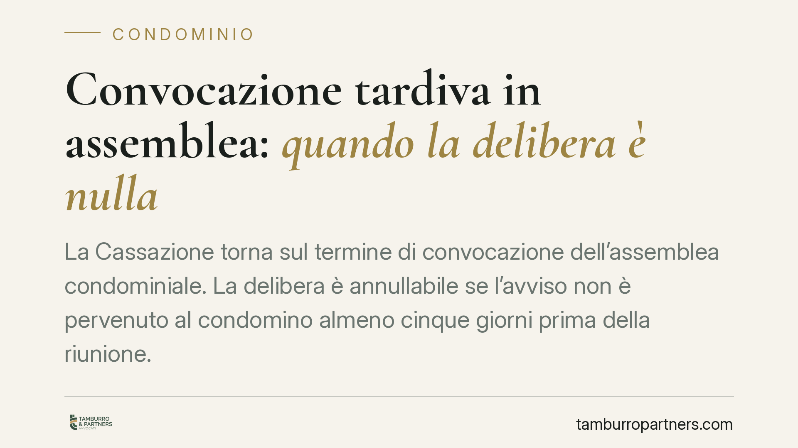

Convocazione tardiva in assemblea: quando la delibera è nulla
La Cassazione torna sul termine di convocazione dell'assemblea condominiale. La delibera è annullabile se l'avviso non è pervenuto al condomino almeno cinque giorni prima della riunione. Decisiva la prova della ricezione: quando l'avviso viaggia per posta, l'amministratore deve dimostrare l'arrivo, non la semplice spedizione. Un chiarimento che pesa su ogni gestione condominiale.

Il caso
Un condomino impugna una delibera assembleare sostenendo di non aver ricevuto l'avviso di convocazione nei termini di legge. L'amministratore documenta la spedizione, ma non la data di effettiva ricezione. La Corte di Cassazione, con pronuncia richiamata nel gennaio 2026, ribadisce un principio spesso trascurato: ciò che conta non è quando l'avviso parte, ma quando arriva.
Inquadramento normativo
Il riferimento è l'art. 66 delle disposizioni di attuazione del codice civile, secondo cui l'avviso di convocazione deve essere comunicato ai condomini almeno cinque giorni prima della data fissata per l'adunanza in prima convocazione. La violazione del termine rende la delibera annullabile (non nulla), su impugnazione del condomino assente o dissenziente, entro trenta giorni.
Qui entra in gioco l'art. 1335 cod. civ., che disciplina la presunzione di conoscenza degli atti recettizi. La norma stabilisce che una comunicazione si considera conosciuta nel momento in cui giunge all'indirizzo del destinatario, salvo che questi provi di essere stato senza sua colpa nell'impossibilità di averne notizia.
La Cassazione trae da questo impianto una conseguenza precisa: il termine dei cinque giorni si calcola dal momento in cui l'avviso perviene nella sfera di conoscibilità del condomino, non da quello della spedizione. Quando la raccomandata non viene consegnata a mani e viene depositata presso l'ufficio postale, rileva la data dell'avviso di giacenza, non quella successiva di ritiro. Ma l'onere di provare quando la giacenza si è verificata grava su chi ha inviato la comunicazione, cioè il condominio.
Cosa cambia in concreto
Per l'amministratore il messaggio è netto: conservare la ricevuta di spedizione non basta. In caso di contestazione occorre dimostrare la data di effettiva ricezione o, in mancanza, la data dell'avviso di giacenza postale. Senza questa prova, la delibera resta esposta all'annullamento.
Per il condomino si apre uno spazio di tutela reale. Chi riceve la convocazione a ridosso dell'assemblea, o dopo che questa si è già tenuta, può contestare la validità delle decisioni adottate. Attenzione però ai termini: l'impugnazione va proposta entro trenta giorni, che decorrono dalla delibera per i dissenzienti presenti e dalla comunicazione del verbale per gli assenti.
È un equilibrio delicato. La regola non serve a paralizzare la vita condominiale con vizi formali, ma a garantire che ciascun proprietario possa partecipare consapevolmente al processo decisionale. Il diritto di intervento in assemblea presuppone di essere avvisati in tempo utile per organizzarsi, informarsi e, se necessario, delegare.
Un punto merita cautela. L'annullabilità opera solo se il vizio viene fatto valere: la delibera non contestata nei termini consolida i propri effetti, anche se la convocazione era tardiva. Il tempo, qui, gioca contro chi resta inerte.
Cosa fare in concreto
- Amministratori: inviate le convocazioni con congruo anticipo rispetto ai cinque giorni minimi, così da assorbire i tempi postali e gli eventuali passaggi in giacenza.
- Amministratori: conservate non solo la ricevuta di spedizione, ma anche l'esito di consegna e la data dell'eventuale avviso di giacenza, richiedendo se occorre la documentazione all'operatore postale.
- Condomini: verificate sempre la data di ricezione dell'avviso e confrontatela con quella dell'assemblea; annotate se la busta reca segni di giacenza.
- Condomini: se rilevate una convocazione tardiva, valutate l'impugnazione entro trenta giorni, calcolando con precisione il dies a quo (delibera o comunicazione del verbale).
- Tutti: prima di procedere, verificate che il vizio abbia inciso in modo concreto sulla possibilità di partecipare, perché non ogni irregolarità formale conduce all'annullamento.
Consigliamo, in presenza di delibere che comportino spese rilevanti o interventi straordinari, di far esaminare la regolarità della convocazione prima di eseguirle: intervenire dopo l'esecuzione complica il recupero delle somme.
---
*Contributo informativo a cura di Tamburro & Partners - Avv. Giuseppe Tamburro. Non costituisce parere legale.*
Ogni condominio ha una storia a sé.
Se gestisci un'amministrazione e vuoi un confronto su una specifica questione condominiale, scrivi allo studio. Ti rispondiamo entro un giorno lavorativo.